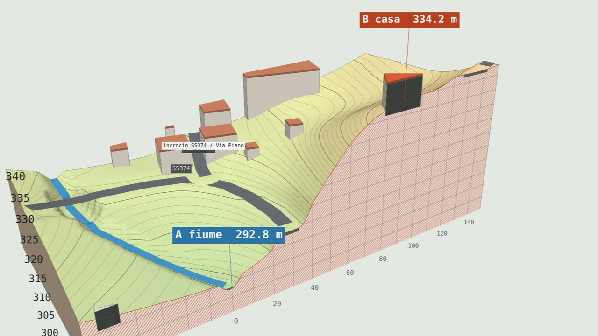
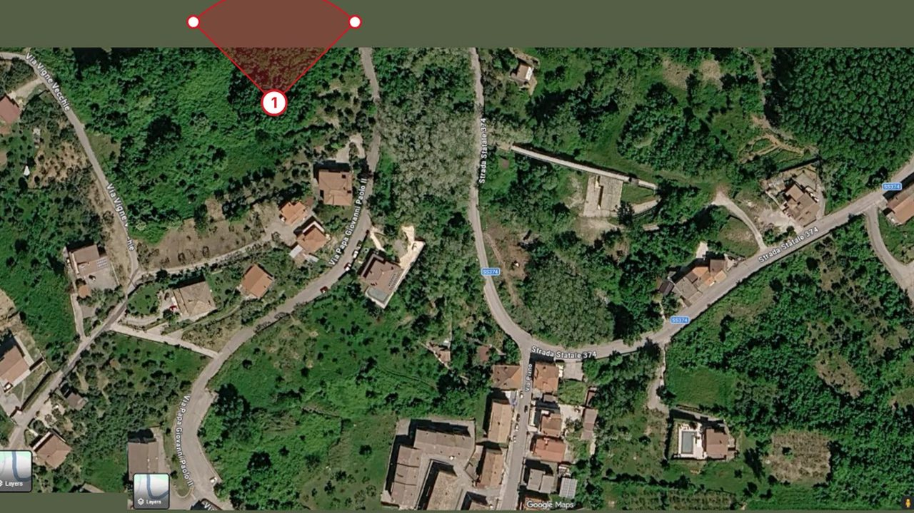

Pipicelli DomenicAntoniosoluzioni ed idee
Questa pagina è in costruzione. Nel frattempo, per pratiche edilizie, fine lavori e agibilità, scrivi a info@esempio.it.
Questa pagina è in costruzione. Nel frattempo, per pratiche edilizie, fine lavori e agibilità, scrivi a info@esempio.it.

Modello 3D interattivo
Il terreno tagliato lungo una sezione dal fondo dell'alveo alla casa, con strada statale, acquedotto, catasto e progetto della particella. Si ruota, si cambia il piano di taglio e si leggono quote e pendenze.
Apri il modello 3DModello 3D interattivo · versione 2
Il paese su un'area di circa un chilometro, con foto aerea e catasto, e la fascia di 150 m dal fiume (D.Lgs. 42/2004, art. 142) campita in blu: quasi metà degli edifici visibili ricade dentro il vincolo.
Apri la versione 2
Editor dei punti di ripresa
Si carica l'immagine aerea e le fotografie: ogni foto ha il suo punto di ripresa e il suo cono, le zone nascoste si segnano con un reticolo. Esporta le immagini, il piano fotografico in PDF e salva o riapre il progetto anche da GitHub.
Apri l'editor